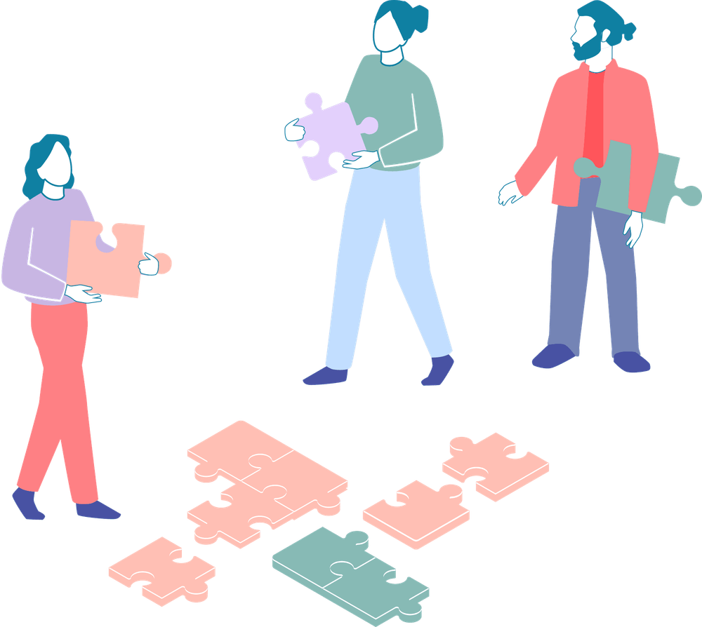

Mit der Academy erhaltet ihr im Business-Plan praxisnahe Lernmodule rund um Facilitation und wirksame Transformation.
Gemeinsam mit 9 Spaces zeigt Plan International Deutschland, wie wertebasiertes Arbeiten Orientierung gibt – nach innen wie nach außen.

Dieses Tool hilft euch dabei, eure Potenziale zu reflektieren.
Ein Tool, das euch dabei hilft, die individuellen Stärken eurer Team-Mitglieder sichtbar zu machen.
Dieses Tool hilft euch dabei, vorhandenes Wissen und Kompetenzen in eurem Team offenzulegen.
Ein kleines Nutzer*innenhandbuch zu sich selbst zu schreiben, hilft bei der Selbsterkenntnis und dem Zusammenarbeiten mit anderen.